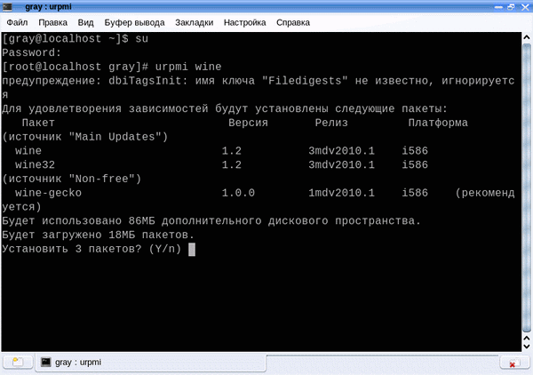
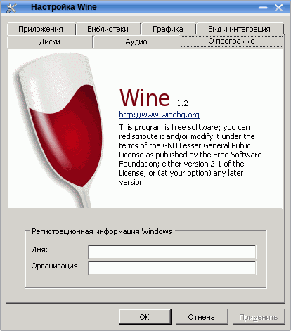
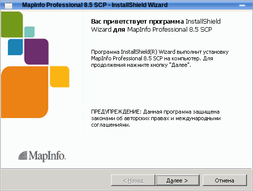
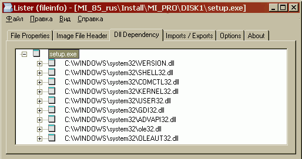
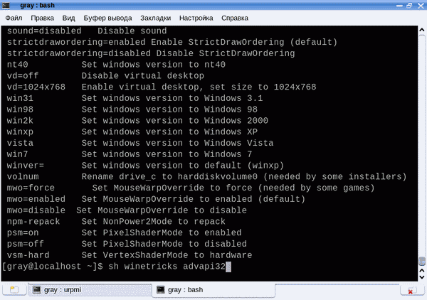
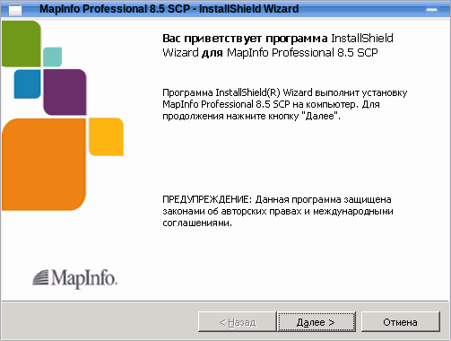
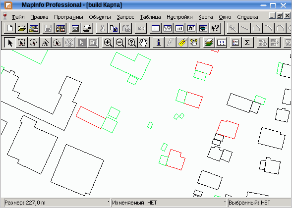

Инсталляция MapInfo в ОС Linux Mandriva
- Вместо предисловия
- Deus ex machine
- Исходные
- Установка Wine
- Plug-and-Pray
- Назад в будущее
- Winetricks
- Win? Win!
- P. S.
Вместо предисловия
Вряд ли на сегодняшний день найдется человек, работающий с компьютером и не слышавший слова «Linux». IT-шные и околоIT-шные миры полны слухов, домыслов, реальных историй и провокаций, холиворы Linux vs Windows заполнили форумы в интернете и курилки в офисах. И пусть доля Linux-систем в качестве десктопных ОС все еще объективно невелика, но у каждого найдется среди знакомых тот, кто пусть и не работает в консоли, но зато знает человека, брат которого женат на сестре человека, который установил дома Ubuntu или, упаси Бог, Gentoo. Шутка.
Не собираясь обсуждать достоинства той или иной ОС перед другой и не желая доказывать кому бы то ни было правильность выбранного пути, необходимо признать тот факт, что ОС Linux существует, развивается и, стало быть, вероятность встречи с ней в реальной жизни – ненулевая. А раз так, было бы неплохо представлять, что это за зверь, с чем его едят и как его применить для собственной пользы.
Автор, произнося эти слова, ссылается на собственный опыт – в один прекрасный день у меня под рукой оказался только маленький netbook с установленной на него Mandriva. И сроки сдачи проекта от этого никак не изменились. Пришлось изучать «на коленке», горько сожалея о своей непредусмотрительности.
Deus ex machine
Одной из основных претензий к Linux’у со стороны рядовых пользователей является неразвитость специального и профессионального программного обеспечения. То есть – если вам надо просто посидеть в интернете или набросать пару-тройку строк в текстовом редакторе, то да, любая из сборок предоставит готовые, зачастую весьма неплохие решения. А вот если требуется сделать что-то большее, чем убить время в офисе, то тут дело плохо. Задачи системных администраторов по сравнительно удобному подъему серверов и прочим шаманским пляскам в данном контексте не рассматриваются, им и для них и так достаточно понаписано. Но проектировщику, конструктору, картографу или какому еще инженеру, привыкшему к специализированным решениям в Windows, придется довольствоваться весьма небогатым выбором.
В ответ же справедливо возражают, указывая на наличие WINE, использование которого позволяет запускать Windows-совместимые приложения в среде Linux.
Что такое Wine, подробно можно узнать на многочисленных сайтах, например, здесь. Вкратце же, цитируя Wikipedia: «Wine— это свободное программное обеспечение, позволяющее пользователям UNIX-подобных систем (…) исполнять (…) приложения Microsoft Windows. (…) Название Wine является рекурсивным акронимом и расшифровывается «Wine Is Not an Emulator» — «Wine — не эмулятор» (имеется в виду, что Wine не является эмулятором компьютера (…)).Wine распространяется на условиях лицензии GNU LGPL.»
Таким образом, получается, достаточно запустить Wine и можно устанавливать любые Windows-программы. В идеале – да. В реальности же, форумы пестрят сообщениями типа «Как запустить 1C под Вайном»… Или же, с учетом специфики этого сайта, «Linux и установка там MapInfo».
Для того, чтобы свести воедино идеал и реальность, попробую описать свой опыт удачной инсталляции MapInfo в среде Linux Mandriva.
Исходные
Итак, что у меня было в наличии? Старенький ноутбук, iRu Stilo 1714 CD. На этот ноутбук была установлена ОС Mandriva Linux release 2009.0 (Official) for i586. После непродолжительных экспериментов система была признана дееспособной и можно было начинать установку MapInfo.
Установка Wine
При подключенном Интернет-соединении современные сборки Linux, в том числе и Mandriva’2009, автоматически его подхватывают и обновляют репозитории. Если этого не произошло, необходимо в Центре управления Mandriva вручную назначить источники обновления программ на закладке «Настройка источников установки/обновления ПО».
- Список зеркал Main
- Список зеркал Main Backports
- Список зеркал Contrib
- Список зеркал Non-free
- Список зеркал Non-free Updates
Когда все настроено, можно переходить к установке Wine. Для этого переходим в консоль и набираем короткую команду:
#urpmi wine
Загрузчик предложит установить 3 пакета и после утвердительного ответа довольно шустро (14 Mb) скачает и установит Wine и сам обновит все зависимости. В моем случае скачалась последняя доступная для Mandriva сборка Wine версии 1.2-3mdv2010.1
Что ж, теперь можно запускать MapInfo на инсталляцию. Вставляем диск, переходим, минуя всякие красивости, в корень инсталлятора (каталог глубоко закопан и называется DATA1), дважды кликаем по файлу setup.exe и …
Plug-and-Pray
Безусловно, хотелось бы вставить и насладится, но, как водится, «дьявол кроется в деталях». После нажатия на кнопку «Далее» появляется окно с сообщением о распаковке ISScript и … все. Ничего не происходит, ни системных сообщений, ни дисковой активности, ни, соответственно, установки.
Надо заметить, что именно из-за подобного «тихушничества» многие пользователи и недолюбливают Wine. Понятно, что произошла ошибка, но где и какая?
Попробуем разобраться. И разработчики, и многочисленные форумные завсегдатаи рекомендуют создать лог-файл выполнения Windows-приложения. Что ж, переходим в консоль и подаем команду на запуск setup.exe с трассировкой:
$ winedebug=+trace1,+trace2,-trace3 wine "/mapinfo/setup.exe" &>/var/log/wine.log
Как и ожидалось, инсталляции не происходит, зато действительно создается файл отчета с текстом:
fixme:advapi:LookupAccountNameW (null) L"gray" (nil) 0x33b1d0 (nil) 0x33b1d4 0x33b1c8 - stub fixme:advapi:LookupAccountNameW (null) L"gray" 0x163520 0x33b1d0 0x1686b0 0x33b1d4 0x33b1c8 - stub fixme:msi:ITERATE_DuplicateFiles We should track these duplicate files as well err:rpc:I_RpcGetBuffer no binding fixme:advapi:LookupAccountNameW (null) L"gray" (nil) 0x33f160 (nil) 0x33f164 0x33f158 - stub fixme:advapi:LookupAccountNameW (null) L"gray" 0x15fe50 0x33f160 0x15f7e0 0x33f164 0x33f158 – stub
Содержательно, не правда ли?
Утомительное гугление строк отчета выявило множественные крики о помощи по всему интернету и полное отсутствие каких либо внятных рекомендаций по исправлению ситуации.
Назад в будущее
Что ж, если гора не идет к Магомету, придется отправиться к горе самостоятельно. При внимательном рассмотрении текста отчета в глаза бросается многократно повторенное слово «advapi». И слово это знакомое, так как в Windows есть системная библиотека advapi32. Как известно, в состав Wine входят многие системные библиотеки Windows, но все ли? Быстрый взгляд на состав предустановленных библиотек в конфигураторе Wine наглядно демонстрирует полное отсутствие указанной dll.
Будем копать дальше! А какие вообще библиотеки нужны инсталлятору MapInfo в работе? И все ли они присутствуют в Wine?
Для того, чтобы ответить на первый вопрос, вернемся обратно в Windows, где запустим Total Commander. Собственно, нам нужен не сам Total, а встроенный просмоторщик Lister с плагином FileInfo. Этот плагин, помимо прочего, позволяет просматривать зависимости исполняемых файлов, т.е., в частном случае, требуемые для работы exe-файла библиотеки:
Перейдя опять в Linux и зайдя в конфигуратор Wine я лично обнаружил отсутствие 4 библиотек:
- ADVAPI32.dll
- GDI32.dll
- KERNEL32.dll
- USER32.dll
И с этим надо что-то делать.
Winetricks
В принципе, можно вручную скопировать библиотеки из Windows и поместить в соответствующий каталог Wine или добавить их через конфигуратор. Но добрые люди уже давно озаботились проблемой автоматизации данного процесса и придумали такую вещь как Winetricks. Вкратце – это скрипт, позволяющий оперативно скачивать и устанавливать в среду Wine необходимые файлы – от простых dll до навороченных FrameWorks.
Именно этим способом и предлагаю воспользоваться.
Шаг 1. Установить пакет cabextract:
# urpmi cabextract
Шаг 2. Загрузить скрипт Winetricks:
# wget http://www.kegel.com/wine/winetricks
Шаг 3. Установить нужную программу можно используя графическую оболочку, запустив ее командой:
# sh winetricks
Либо вручную установить выбранный пакет:
# sh winetricks advapi32 # sh winetricks gdi32 # sh winetricks kernel2 # sh winetricks user32
Win? Win!
Вроде все, что можно сделали. Запускаем setup.exe на выполнение и – о, чудо!!!
Все запустилось, все ставится и, что характерно, все работает!

Кстати.
Как поставили программу, так и удалить можно. Аналог оснастки Windows «Установка и удаление программ» в Wine позволяет изменять компоненты установленных программ, равно как и деинсталлировать их.
P. S.
Несколько дней мозговых усилий уместились в пять строк кода. Очевидно, в этом и есть сила Великого Торвальдса… Основная загвоздка в том, что эти 5 строк надо знать. И если вы решили поставить MapInfo под Wine, неважно почему – будем надеяться, теперь вы их знаете.
И даже если все равно не получается – вы знаете, что это возможно.